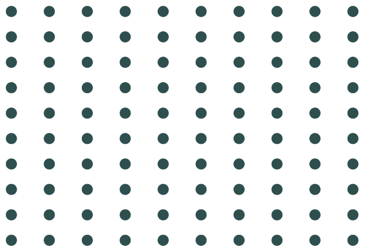
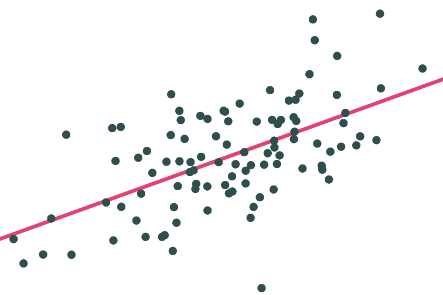
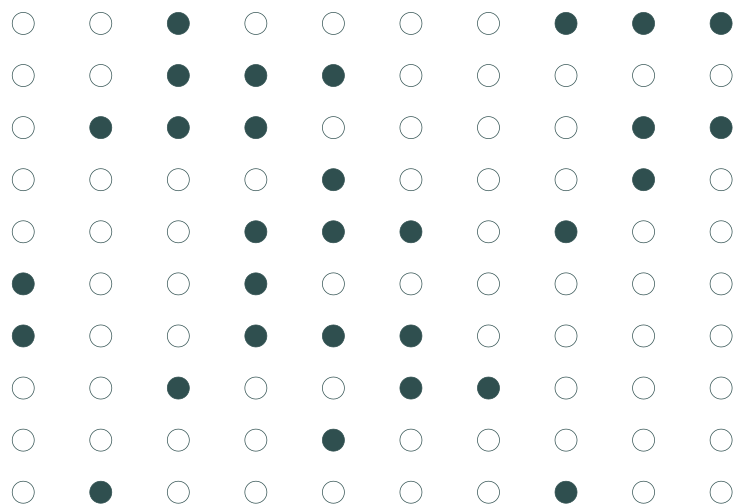
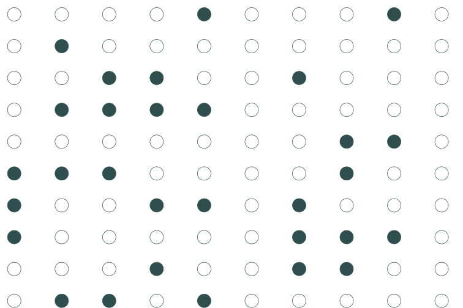
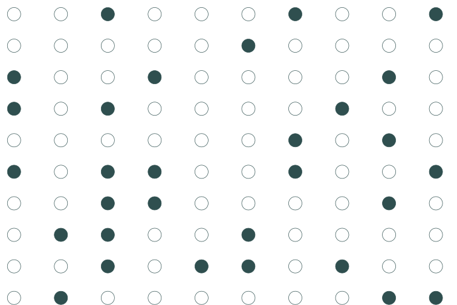
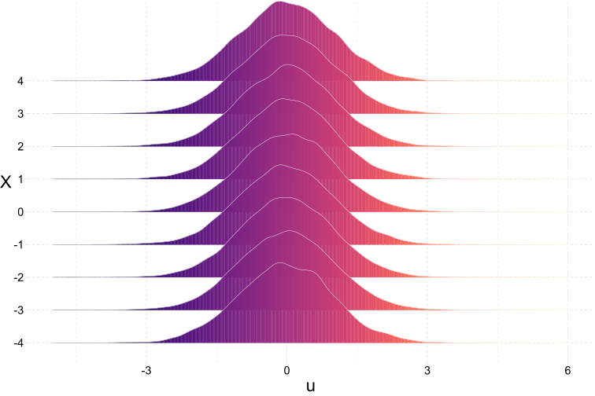
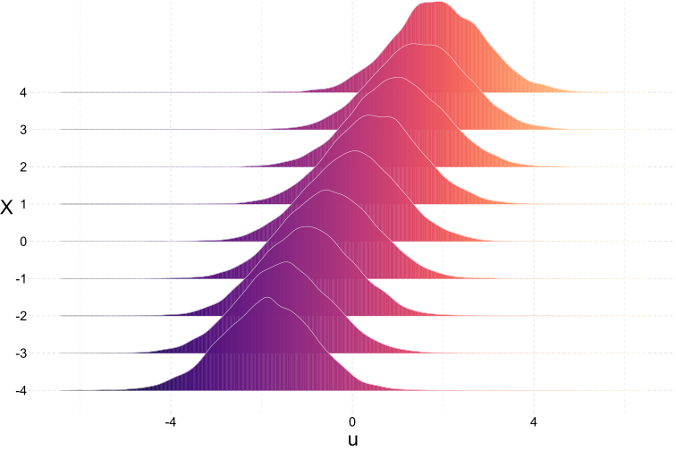

Metric Review
Econometric Methods
Zahid Asghar
2023-09-16
Prologue
.mono[R] showcase
New this week
Because part of this course is about learning and implementing .mono[R], I’m going to share some interesting/amazing/fun applications of .mono[R].
- .mono[R]-based web application
- Maps your location data (as tracked by Google)
- Great example of .mono[R]’s ability to extend beyond statistical programming
- (Visualization matters.)
- Creates really cool shaded maps (easily!)
- What else does one need?

 The rayshader package.
The rayshader package.
Last Time
Motivation
In our last set of slides, we
discussed the motivation for studying econometrics (metrics)
introduced .mono[R]—why we use it, what it can do
started reviewing material from your previous classes
These notes continue the review, building the foundation for some new topics (soon).
Normally: .mono[R] is available at all academic workstations at UO.
Review
Population vs. sample
Models and notation
We write our (simple) population model
\[ y_i = \beta_0 + \beta_1 x_i + u_i \]
and our sample-based estimated regression model as
\[ y_i = \hat{\beta}_0 + \hat{\beta}_1 x_i + e_i \]
An estimated regession model produces estimates for each observation:
\[ \hat{y}_i = \hat{\beta}_0 + \hat{\beta}_1 x_i \]
which gives us the best-fit line through our dataset.
Population vs. sample
Question: Why do we care about population vs. sample?
Population

\[ y_i = 2.53 + 0.57 x_i + u_i \]
\[ y_i = \beta_0 + \beta_1 x_i + u_i \]
Sample

Sample 1: 30 random individuals

Population relationship \(y_i = 2.53+0.57 x_i + u_i\)
Sample relationship \(\hat{y}_i = 2.36+0.61 x_i\)

Sample 2: 30 random individuals

Population relationship \(y_i = 2.53+0.57 x_i + u_i\)
Sample relationship
\(\hat{y}_i = 2.79+`r round(lm2\)coefficients[2], 2)` x_i$

Sample 3: 30 random individuals

[Population relationship \(y_i = 2.53+0.57 x_i + u_i\)
Sample relationship \(\hat{y}_i = 3.21+0.45 x_i\) ]{.center}
Let’s repeat this 10,000 times.
(This exercise is called a (Monte Carlo) simulation.)
Population vs. sample
Question: Why do we care about population vs. sample?
On average, our regression lines match the population line very nicely.
However, individual lines (samples) can really miss the mark.
Differences between individual samples and the population lead to uncertainty for the econometrician.
Answer: Uncertainty matters.
\(\hat{\beta}\) itself is a random variable—dependent upon the random sample. When we take a sample and run a regression, we don’t know if it’s a ‘good’ sample ( \(\hat{\beta}\) is close to \(\beta\)) or a ‘bad sample’ (our sample differs greatly from the population).
Uncertainty
Keeping track of this uncertainty will be a key concept throughout our class.
Estimating standard errors for our estimates.
Testing hypotheses.
Correcting for heteroskedasticity and autocorrelation.
First, let’s refresh on how we get these (uncertain) regression estimates.
Linear regression
The estimator
We can estimate a regression line in .mono[R] (lm(y ~ x, my_data)) and .mono[Stata] (reg y x). But where do these estimates come from?
A few slides back:
\[ \hat{y}_i = \hat{\beta}_0 + \hat{\beta}_1 x_i \] which gives us the best-fit line through our dataset.
But what do we mean by “best-fit line”?
Being the “best”
Question: What do we mean by best-fit line?
Answers:
- In general (econometrics), best-fit line means the line that minimizes the sum of squared errors (SSE):
\(\text{SSE} = \sum_{i = 1}^{n} e_i^2\quad\) where \(\quad e_i = y_i - \hat{y}_i\)
- Ordinary least squares (OLS) minimizes the sum of the squared errors.
- Based upon a set of (mostly palatable) assumptions, OLS
- Is unbiased (and consistent)
- Is the best (minimum variance) linear unbiased estimator (BLUE)
OLS vs. other lines/estimators

For any line \(\left(\hat{y} = \hat{\beta}_0 + \hat{\beta}_1 x\right)\) \(\color{#ffffff}{\bigg|}\)

For any line \(\left(\hat{y} = \hat{\beta}_0 + \hat{\beta}_1 x\right)\), we can calculate errors: \(e_i = y_i - \hat{y}_i\) \(\color{#ffffff}{\bigg|}\)

For any line \(\left(\hat{y} = \hat{\beta}_0 + \hat{\beta}_1 x\right)\), we can calculate errors: \(e_i = y_i - \hat{y}_i\) \(\color{#ffffff}{\bigg|}\)

For any line \(\left(\hat{y} = \hat{\beta}_0 + \hat{\beta}_1 x\right)\), we can calculate errors: \(e_i = y_i - \hat{y}_i\) \(\color{#ffffff}{\bigg|}\)

SSE squares the errors \(\left(\sum e_i^2\right)\): bigger errors get bigger penalties. \(\color{#ffffff}{\bigg|}\)

The OLS estimate is the combination of \(\hat{\beta}_0\) and \(\hat{\beta}_1\) that minimize SSE. \(\color{#ffffff}{\bigg|}\)

Formally
In simple linear regression, the OLS estimator comes from choosing the \(\hat{\beta}_0\) and \(\hat{\beta}_1\) that minimize the sum of squared errors (SSE), i.e.,
\[ \min_{\hat{\beta}_0,\, \hat{\beta}_1} \text{SSE} \]
but we already know \(\text{SSE} = \sum_i e_i^2\). Now use the definitions of \(e_i\) and \(\hat{y}\).
\[ \begin{aligned} e_i^2 &= \left( y_i - \hat{y}_i \right)^2 = \left( y_i - \hat{\beta}_0 - \hat{\beta}_1 x_i \right)^2 \\ &= y_i^2 - 2 y_i \hat{\beta}_0 - 2 y_i \hat{\beta}_1 x_i + \hat{\beta}_0^2 + 2 \hat{\beta}_0 \hat{\beta}_1 x_i + \hat{\beta}_1^2 x_i^2 \end{aligned} \]
–
Recall: Minimizing a multivariate function requires (1) first derivatives equal zero (the 1.super[st]-order conditions) and (2) second-order conditions (concavity).
We’re getting close. We need to minimize SSE. We’ve showed how SSE relates to our sample (our data: \(x\) and \(y\)) and our estimates (i.e., \(\hat{\beta}_0\) and \(\hat{\beta}_1\)).
\[ \text{SSE} = \sum_i e_i^2 = \sum_i \left( y_i^2 - 2 y_i \hat{\beta}_0 - 2 y_i \hat{\beta}_1 x_i + \hat{\beta}_0^2 + 2 \hat{\beta}_0 \hat{\beta}_1 x_i + \hat{\beta}_1^2 x_i^2 \right) \]
For the first-order conditions of minimization, we now take the first derivates of SSE with respect to \(\hat{\beta}_0\) and \(\hat{\beta}_1\).
\[ \begin{aligned} \dfrac{\partial \text{SSE}}{\partial \hat{\beta}_0} &= \sum_i \left( 2 \hat{\beta}_0 + 2 \hat{\beta}_1 x_i - 2 y_i \right) = 2n \hat{\beta}_0 + 2 \hat{\beta}_1 \sum_i x_i - 2 \sum_i y_i \\ &= 2n \hat{\beta}_0 + 2n \hat{\beta}_1 \overline{x} - 2n \overline{y} \end{aligned} \]
where \(\overline{x} = \frac{\sum x_i}{n}\) and \(\overline{y} = \frac{\sum y_i}{n}\) are sample means of \(x\) and \(y\) (size \(n\)).
The first-order conditions state that the derivatives are equal to zero, so:
\[ \dfrac{\partial \text{SSE}}{\partial \hat{\beta}_0} = 2n \hat{\beta}_0 + 2n \hat{\beta}_1 \overline{x} - 2n \overline{y} = 0 \]
which implies
\[ \hat{\beta}_0 = \overline{y} - \hat{\beta}_1 \overline{x} \]
Now for \(\hat{\beta}_1\).
Take the derivative of SSE with respect to \(\hat{\beta}_1\)
\[ \begin{aligned} \dfrac{\partial \text{SSE}}{\partial \hat{\beta}_1} &= \sum_i \left( 2 \hat{\beta}_0 x_i + 2 \hat{\beta}_1 x_i^2 - 2 y_i x_i \right) = 2 \hat{\beta}_0 \sum_i x_i + 2 \hat{\beta}_1 \sum_i x_i^2 - 2 \sum_i y_i x_i \\ &= 2n \hat{\beta}_0 \overline{x} + 2 \hat{\beta}_1 \sum_i x_i^2 - 2 \sum_i y_i x_i \end{aligned} \]
set it equal to zero (first-order conditions, again)
\[ \dfrac{\partial \text{SSE}}{\partial \hat{\beta}_1} = 2n \hat{\beta}_0 \overline{x} + 2 \hat{\beta}_1 \sum_i x_i^2 - 2 \sum_i y_i x_i = 0 \]
and substitute in our relationship for \(\hat{\beta}_0\), i.e., \(\hat{\beta}_0 = \overline{y} - \hat{\beta}_1 \overline{x}\). Thus,
\[ 2n \left(\overline{y} - \hat{\beta}_1 \overline{x}\right) \overline{x} + 2 \hat{\beta}_1 \sum_i x_i^2 - 2 \sum_i y_i x_i = 0 \]
Continuing from the last slide
\[ 2n \left(\overline{y} - \hat{\beta}_1 \overline{x}\right) \overline{x} + 2 \hat{\beta}_1 \sum_i x_i^2 - 2 \sum_i y_i x_i = 0 \]
we multiply out
\[ 2n \overline{y}\,\overline{x} - 2n \hat{\beta}_1 \overline{x}^2 + 2 \hat{\beta}_1 \sum_i x_i^2 - 2 \sum_i y_i x_i = 0 \]
\[ \implies 2 \hat{\beta}_1 \left( \sum_i x_i^2 - n \overline{x}^2 \right) = 2 \sum_i y_i x_i - 2n \overline{y}\,\overline{x} \]
\[ \implies \hat{\beta}_1 = \dfrac{\sum_i y_i x_i - 2n \overline{y}\,\overline{x}}{\sum_i x_i^2 - n \overline{x}^2} = \dfrac{\sum_i (x_i - \overline{x})(y_i - \overline{y})}{\sum_i (x_i - \overline{x})^2} \]
Done!
We now have (lovely) OLS estimators for the slope
\[ \hat{\beta}_1 = \dfrac{\sum_i (x_i - \overline{x})(y_i - \overline{y})}{\sum_i (x_i - \overline{x})^2} \]
and the intercept
\[ \hat{\beta}_0 = \overline{y} - \hat{\beta}_1 \overline{x} \]
And now you know where the least squares part of ordinary least squares comes from. 🎊
–
We now turn to the assumptions and (implied) properties of OLS.
OLS: Assumptions and properties
Properties
Question: What properties might we care about for an estimator?
–
Tangent: Let’s review statistical properies first.
Refresher: Density functions
Recall that we use probability density functions (PDFs) to describe the probability a continuous random variable takes on a range of values. (The total area = 1.)
These PDFs characterize probability distributions, and the most common/famous/popular distributions get names (e.g., normal, t, Gamma).
Refresher: Density functions
The probability a standard normal random variable takes on a value between -2 and 0: \(\mathop{\text{P}}\left(-2 \leq X \leq 0\right) = 0.48\)

Refresher: Density functions
The probability a standard normal random variable takes on a value between -1.96 and 1.96: \(\mathop{\text{P}}\left(-1.96 \leq X \leq 1.96\right) = 0.95\)

Refresher: Density functions
The probability a standard normal random variable takes on a value beyond 2: \(\mathop{\text{P}}\left(X > 2\right) = 0.023\)

Imagine we are trying to estimate an unknown parameter \(\beta\), and we know the distributions of three competing estimators. Which one would we want? How would we decide?

Question: What properties might we care about for an estimator?
–
Answer one: Bias.
On average (after many samples), does the estimator tend toward the correct value?
More formally: Does the mean of estimator’s distribution equal the parameter it estimates?
\[ \mathop{\text{Bias}}_\beta \left( \hat{\beta} \right) = \mathop{\boldsymbol{E}}\left[ \hat{\beta} \right] - \beta \]
Answer one: Bias.
.pull-left[
Unbiased estimator: \(\mathop{\boldsymbol{E}}\left[ \hat{\beta} \right] = \beta\)

]
–
.pull-right[
Biased estimator: \(\mathop{\boldsymbol{E}}\left[ \hat{\beta} \right] \neq \beta\)

]
Answer two: Variance.
The central tendencies (means) of competing distributions are not the only things that matter. We also care about the variance of an estimator.
\[ \mathop{\text{Var}} \left( \hat{\beta} \right) = \mathop{\boldsymbol{E}}\left[ \left( \hat{\beta} - \mathop{\boldsymbol{E}}\left[ \hat{\beta} \right] \right)^2 \right] \]
Lower variance estimators mean we get estimates closer to the mean in each sample.
Answer two: Variance.

Answer one: Bias.
Answer two: Variance.
Subtlety: The bias-variance tradeoff.
Should we be willing to take a bit of bias to reduce the variance?
In econometrics, we generally stick with unbiased (or consistent) estimators. But other disciplines (especially computer science) think a bit more about this tradeoff.
The bias-variance tradeoff.

OLS: Assumptions and properties
Properties
As you might have guessed by now,
- OLS is unbiased.
- OLS has the minimum variance of all unbiased linear estimators.
OLS: Assumptions and properties
Properties
But… these (very nice) properties depend upon a set of assumptions:
The population relationship is linear in parameters with an additive disturbance.
Our \(X\) variable is exogenous, i.e., \(\mathop{\boldsymbol{E}}\left[ u \mid X \right] = 0\).
The \(X\) variable has variation. And if there are multiple explanatory variables, they are not perfectly collinear.
The population disturbances \(u_i\) are independently and identically distributed as normal random variables with mean zero \(\left( \mathop{\boldsymbol{E}}\left[ u \right] = 0 \right)\) and variance \(\sigma^2\) (i.e., \(\mathop{\boldsymbol{E}}\left[ u^2 \right] = \sigma^2\)). Independently distributed and mean zero jointly imply \(\mathop{\boldsymbol{E}}\left[ u_i u_j \right] = 0\) for any \(i\neq j\).
OLS: Assumptions and properties
Assumptions
Different assumptions guarantee different properties:
- Assumptions (1), (2), and (3) make OLS unbiased.
- Assumption (4) gives us an unbiased estimator for the variance of our OLS estimator.
During our course, we will discuss the many ways real life may violate these assumptions. For instance:
- Non-linear relationships in our parameters/disturbances (or misspecification).
- Disturbances that are not identically distributed and/or not independent.
- Violations of exogeneity (especially omitted-variable bias).
OLS: Assumptions and properties
Conditional expectation
For many applications, our most important assumption is exogeneity, i.e., \[ \begin{align} \mathop{E}\left[ u \mid X \right] = 0 \end{align} \] but what does it actually mean?
–
One way to think about this definition:
For any value of \(X\), the mean of the residuals must be zero.
E.g., \(\mathop{E}\left[ u \mid X=1 \right]=0\) and \(\mathop{E}\left[ u \mid X=100 \right]=0\)
E.g., \(\mathop{E}\left[ u \mid X_2=\text{Female} \right]=0\) and \(\mathop{E}\left[ u \mid X_2=\text{Male} \right]=0\)
Notice: \(\mathop{E}\left[ u \mid X \right]=0\) is more restrictive than \(\mathop{E}\left[ u \right]=0\)
Graphically
Valid exogeneity, i.e., \(\mathop{E}\left[ u \mid X \right] = 0\)
Invalid exogeneity, i.e., \(\mathop{E}\left[ u \mid X \right] \neq 0\)
Uncertainty and inference
Is there more?
Up to this point, we know OLS has some nice properties, and we know how to estimate an intercept and slope coefficient via OLS.
Our current workflow: - Get data (points with \(x\) and \(y\) values) - Regress \(y\) on \(x\) - Plot the OLS line (i.e., \(\hat{y} = \hat{\beta}_0 + \hat{\beta}_1\)) - Done?
But how do we actually learn something from this exercise?
There is more
But how do we actually learn something from this exercise?
- Based upon our value of \(\hat{\beta}_1\), can we rule out previously hypothesized values?
- How confident should we be in the precision of our estimates?
- How well does our model explain the variation we observe in \(y\)?
We need to be able to deal with uncertainty. Enter: Inference.
Learning from our errors
As our previous simulation pointed out, our problem with uncertainty is that we don’t know whether our sample estimate is close or far from the unknown population parameter..pink[†]
However, all is not lost. We can use the errors \(\left(e_i = y_i - \hat{y}_i\right)\) to get a sense of how well our model explains the observed variation in \(y\).
When our model appears to be doing a “nice” job, we might be a little more confident in using it to learn about the relationship between \(y\) and \(x\).
Now we just need to formalize what a “nice job” actually means.
.footnote[ .pink[†]: Except when we run the simulation ourselves—which is why we like simulations.]
First off, we will estimate the variance of \(u_i\) (recall: \(\mathop{\text{Var}} \left( u_i \right) = \sigma^2\)) using our squared errors, i.e.,
\[ s^2 = \dfrac{\sum_i e_i^2}{n - k} \]
where \(k\) gives the number of slope terms and intercepts that we estimate (e.g., \(\beta_0\) and \(\beta_1\) would give \(k=2\)).
\(s^2\) is an unbiased estimator of \(\sigma^2\).
You then showed that the variance of \(\hat{\beta}_1\) (for simple linear regression) is
\[ \mathop{\text{Var}} \left( \hat{\beta}_1 \right) = \dfrac{s^2}{\sum_i \left( x_i - \overline{x} \right)^2} \]
which shows that the variance of our slope estimator
- increases as our disturbances become noisier
- decreases as the variance of \(x\) increases
More common: The standard error of \(\hat{\beta}_1\)
\[ \mathop{\hat{\text{SE}}} \left( \hat{\beta}_1 \right) = \sqrt{\dfrac{s^2}{\sum_i \left( x_i - \overline{x} \right)^2}} \]
Recall: The standard error of an estimator is the standard deviation of the estimator’s distribution.
Standard error output is standard in .mono[R]’s lm:
#> # A tibble: 2 × 5
#> term estimate std.error statistic p.value
#> <chr> <dbl> <dbl> <dbl> <dbl>
#> 1 (Intercept) 2.53 0.422 6.00 3.38e- 8
#> 2 x 0.567 0.0793 7.15 1.59e-10We use the standard error of \(\hat{\beta}_1\), along with \(\hat{\beta}_1\) itself, to learn about the parameter \(\beta_1\).
After deriving the distribution of \(\hat{\beta}_1\),.pink[†] we have two (related) options for formal statistical inference (learning) about our unknown parameter \(\beta_1\):
Confidence intervals: Use the estimate and its standard error to create an interval that, when repeated, will generally.pink[††] contain the true parameter.
Hypothesis tests: Determine whether there is statistically significant evidence to reject a hypothesized value or range of values.
.footnote[ .pink[†]: Hint: it’s normal with the mean and variance we’ve derived/discussed above)
.pink[††]: E.g., Similarly constructed 95% confidence intervals will contain the true parameter 95% of the time.]
Uncertainty and inference
Confidence intervals
We construct \((1-\alpha)\)-level confidence intervals for \(\beta_1\) \[ \hat{\beta}\_1 \pm t\_{\alpha/2,\text{df}} \, \mathop{\hat{\text{SE}}} \left( \hat{\beta}\_1 \right) \]
\(t_{\alpha/2,\text{df}}\) denotes the \(\alpha/2\) quantile of a \(t\) dist. with \(n-k\) degrees of freedom.
For example, 100 obs., two coefficients (i.e., \(\hat{\beta}_0\) and \(\hat{\beta}_1 \implies k = 2\)), and \(\alpha = 0.05\) (for a 95% confidence interval) gives us \(t_{0.025,\,98} = -1.98\)
Example:
#> # A tibble: 2 × 5
#> term estimate std.error statistic p.value
#> <chr> <dbl> <dbl> <dbl> <dbl>
#> 1 (Intercept) 2.53 0.422 6.00 3.38e- 8
#> 2 x 0.567 0.0793 7.15 1.59e-10–
Our 95% confidence interval is thus \(0.567 \pm 1.98 \times 0.0793 = \left[ 0.410,\, 0.724 \right]\)
Uncertainty and inference
Confidence intervals
So we have a confidence interval for \(\beta_1\), i.e., \(\left[ 0.410,\, 0.724 \right]\).
What does it mean?
–
Informally: The confidence interval gives us a region (interval) in which we can place some trust (confidence) for containing the parameter.
–
More formally: If repeatedly sample from our population and construct confidence intervals for each of these samples, \((1-\alpha)\) percent of our intervals (e.g., 95%) will contain the population parameter somewhere in the interval.
–
Now back to our simulation…
We drew 10,000 samples (each of size \(n = 30\)) from our population and estimated our regression model for each of these simulations:
\[ y_i = \hat{\beta}_0 + \hat{\beta}_1 x_i + e_i \]
Now, let’s estimate 95% confidence intervals for each of these intervals…
From our previous simulation: 97.9% of 95% confidences intervals contain the true parameter value of \(\beta_1\).

Uncertainty and inference
Hypothesis testing
In many applications, we want to know more than a point estimate or a range of values. We want to know what our statistical evidence says about existing theories.
We want to test hypotheses posed by officials, politicians, economists, scientists, friends, weird neighbors, etc.
.hi-slate[Examples]
- Does increasing police presence reduce crime?
- Does building a giant wall reduce crime?
- Does shutting down a government adversely affect the economy?
- Does legal cannabis reduce drunk driving or reduce opiod use?
- Do air quality standards increase health and/or reduce jobs?
Hypothesis testing relies upon very similar results and intuition.
While uncertainty certainly exists, we can still build reliable statistical tests (rejecting or failing to reject a posited hypothesis).
–
.hi-slate[OLS t test] Our (null) hypothesis states that \(\beta_1\) equals a value \(c\), i.e., \(H_o:\: \beta_1 = c\)
From OLS’s properties, we can show that the test statistic
\[ t_\text{stat} = \dfrac{\hat{\beta}_1 - c}{\mathop{\hat{\text{SE}}} \left( \hat{\beta}_1 \right)} \]
follows the \(t\) distribution with \(n-k\) degrees of freedom.
For an \(\alpha\)-level, two-sided test, we reject the null hypothesis (and conclude with the alternative hypothesis) when
\[ \left|t\_\text{stat}\right| > \left|t\_{1-\alpha/2,\,df}\right| \]
meaning that our test statistic is more extreme than the critical value.
Alternatively, we can calculate the p-value that accompanies our test statistic, which effectively gives us the probability of seeing our test statistic or a more extreme test statistic if the null hypothesis were true.
Very small p-values (generally < 0.05) mean that it would be unlikely to see our results if the null hyopthesis were really true—we tend to reject the null for p-values below 0.05.
.mono[R] and .mono[Stata] default to testing hypotheses against the value zero.
#> # A tibble: 2 × 5
#> term estimate std.error statistic p.value
#> <chr> <dbl> <dbl> <dbl> <dbl>
#> 1 (Intercept) 2.53 0.422 6.00 3.38e- 8
#> 2 x 0.567 0.0793 7.15 1.59e-10–
H.sub[o]: \(\beta_1 = 0\) vs. H.sub[a]: \(\beta_1 \neq 0\)
–
\(t_\text{stat} = 7.15\) and \(t_\text{0.975, 28} = 2.05\)
which implies p-value \(< 0.05\)
–
Therefore, we .hi[reject H.sub[o]].
Back to our simulation! Let’s see what our \(t\) statistic is actually doing.
In this situation, we can actually know (and enforce) the null hypothesis, since we generated the data.
For each of the 10,000 samples, we will calculate the \(t\) statistic, and then we can see how many \(t\) statistics exceed our critical value (2.05, as above).
The answer should be approximately 5 percent—our \(\alpha\) level.
Uncertainty and inference
In our simulation, 2.1 percent of our \(t\) statistics reject the null hypothesis.
The distribution of our \(t\) statistics (shading the rejection regions).

Correspondingly, 2.1 percent of our p-values reject the null hypothesis.
The distribution of our p-values (shading the p-values below 0.05).

Uncertainty and inference
F tests
You will sometimes see \(F\) tests in econometrics.
We use \(F\) tests to test hypotheses that involve multiple parameters
(e.g., \(\beta_1 = \beta_2\) or \(\beta_3 + \beta_4 = 1\)),
rather than a single simple hypothesis
(e.g., \(\beta_1 = 0\), for which we would just use a \(t\) test).
Example
Economists love to say “Money is fungible.”
Imagine that we might want to test whether money received as income actually has the same effect on consumption as money received from tax rebates/returns.
\[ \text{Consumption}\_i = \beta\_0 + \beta\_1 \text{Income}\_{i} + \beta\_2 \text{Rebate}\_i + u\_i \]
Example, continued
We can write our null hypothesis as
\[ H_o:\: \beta_1 = \beta_2 \iff H_o :\: \beta_1 - \beta_2 = 0 \]
Imposing this null hypothesis gives us the restricted model
\[ \text{Consumption}\_i = \beta\_0 + \beta\_1 \text{Income}\_{i} + \beta\_1 \text{Rebate}\_i + u\_i \] \[ \text{Consumption}\_i = \beta\_0 + \beta\_1 \left( \text{Income}\_{i} + \text{Rebate}\_i \right) + u\_i \]
Example, continued
To test the null hypothesis \(H_o :\: \beta_1 = \beta_2\) against \(H_a :\: \beta_1 \neq \beta_2\),
we use the \(F\) statistic \[
\begin{align}
F_{q,\,n-k-1} = \dfrac{\left(\text{SSE}_r - \text{SSE}_u\right)/q}{\text{SSE}_u/(n-k-1)}
\end{align}
\] which (as its name suggests) follows the \(F\) distribution with \(q\) numerator degrees of freedom and \(n-k-1\) denominator degrees of freedom.
Here, \(q\) is the number of restrictions we impose via \(H_o\).
Example, continued
\(\text{SSE}_r\) is the sum of squared errors (SSE) from our restricted model \[ \text{Consumption}\_i = \beta\_0 + \beta\_1 \left( \text{Income}\_{i} + \text{Rebate}\_i \right) + u\_i \]
and \(\text{SSE}_u\) is the sum of squared errors (SSE) from our unrestricted model \[ \text{Consumption}\_i = \beta\_0 + \beta\_1 \text{Income}\_{i} + \beta\_2 \text{Rebate}\_i + u\_i \]
–
An \(F\) test compares the unrestricted model’s performance to the restricted model’s performance using their \(\text{SSE}\)s.
–
\[ \begin{align} F_\text{stat} = \dfrac{\left(\text{SSE}_r - \text{SSE}_u\right)/q}{\text{SSE}_u/(n-k-1)} \sim F_{q,\,n-k-1} \end{align} \]